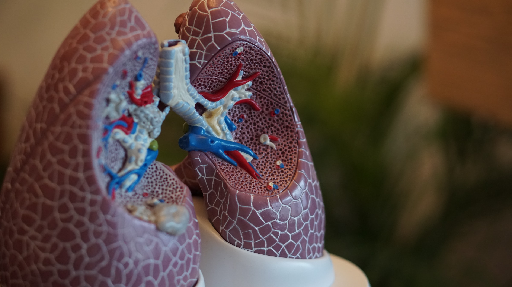
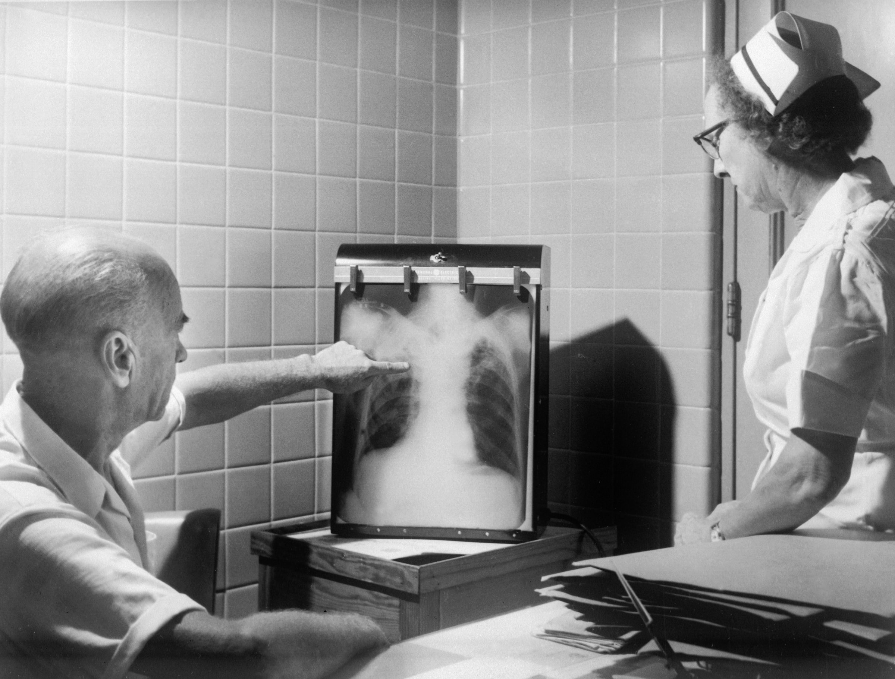

Qualquer pessoa pode desenvolver a doença, mas crianças com até cinco anos de idade, lactentes, idosos e pessoas com doenças cardiopulmonares são as mais vulneráveis.
Em 2015, a doença tirou a vida de 922.000 crianças menores de cinco anos em todo o mundo. Isto significa uma perda de mais de 2.500 crianças todos os dias, ou mais de 100 a cada hora.
Desde 2000, o número de mortes de crianças causadas por pneumonia diminuiu 47%. O enorme progresso feito é devido em parte ao rápido avanço de vacinas, melhor nutrição e melhoria de procura de cuidados e tratamento para os sintomas.
Levar as crianças para um pediatra rapidamente pode salvar suas vidas, mas, em todo o mundo, apenas 3 em cada 5 crianças recebem a ajuda e os cuidados necessários.
